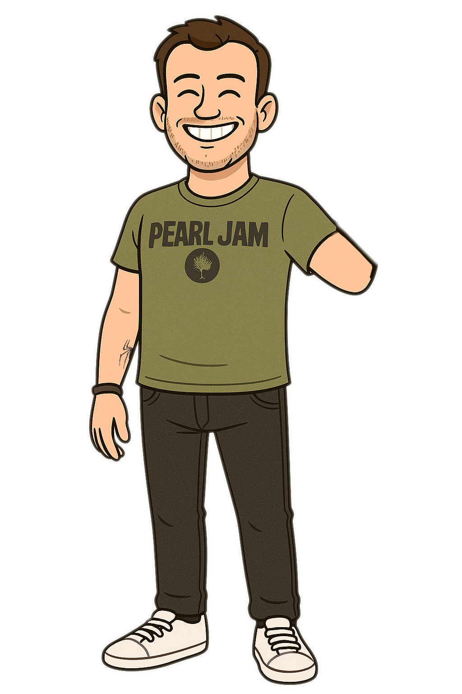
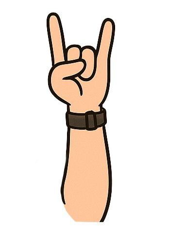
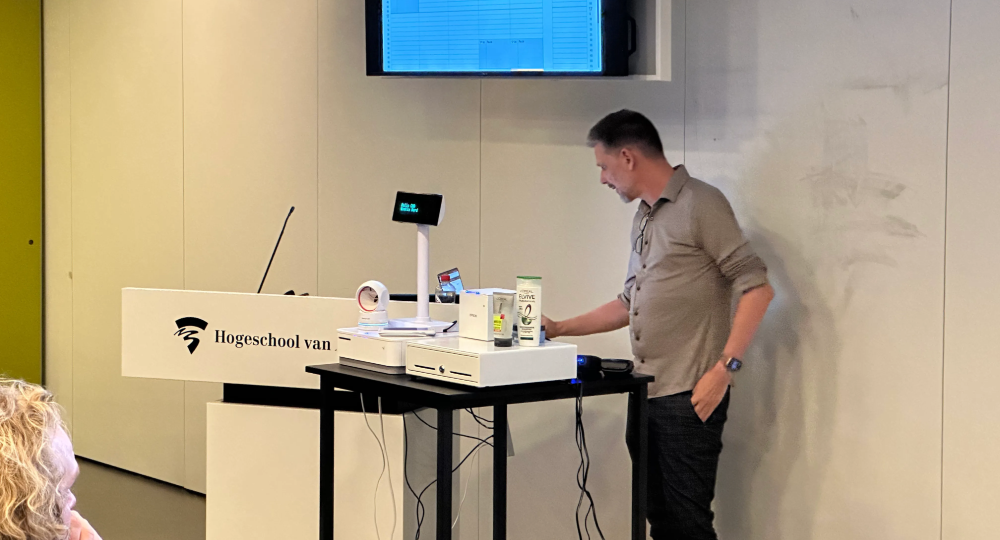
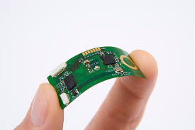
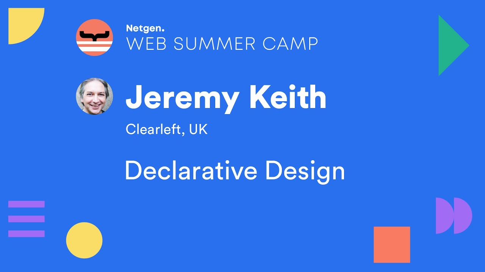

Over mij


Hoi, ik ben Tom van Droffelaar, een gepassioneerde webdeveloper in het
derde jaar van de studie Communicatie en Multimedia Design aan de
Hogeschool van Amsterdam.
PORTFOLIO →
Nieuw Binnen
-
1.
Over mij>
-
2.
Hackaton>
-
3.
weekly-nerds>
-
4.
Projecten>
-
5.
Leerdoelen & Reflectie>
Hackaton
Weekly Nerds
Geld verdienen met Project Fuga
9 April | Niels Leenheer
Circuit Bending
3 April | Rosa Schuurmans
Declarative Design
12 Maart | Jeremy Keith
Beyond Tweening - GSAP
7 Maart | Cassie Evans

Pay the Web Forward with web Monetization
26 Februari | Peter-Paul Koch
Stop using JS for that
5 Februari | Kilian Valkhof

Projecten
Reflectie
Weekly Nerd sprekers
Het belangrijkste wat ik hieruit meeneem zijn het belang van accessibility en het principe van the rule of least power. Daarnaast heeft deze ervaring me laten zien dat de mogelijkheden van het web veel groter zijn dan ik aanvankelijk dacht. Van het aansturen van printers tot het creëren van digitale schilderijen: het web biedt eindeloze creatieve en technische toepassingen.
Hackaton
Ik ben erg tevreden met het eindresultaat. Samen hebben we iets moois neergezet, en de samenwerking verliep soepel. Ik heb de basis van de code opgezet, waarna mijn teamgenoten hun delen aanleverden. Deze kon ik vervolgens moeiteloos integreren. Daarnaast kon ik direct toepassen wat we tijdens de vakken hebben geleerd, wat het proces extra prettig maakte.
Hoe gaat het?
De minor verloopt tot nu toe erg soepel. Ik haal veel plezier uit het bouwen van verschillende projecten en merk dat ik mezelf goed kan uitdagen. Vooral mijn bierapp en de DeLorean maken mij trots, al besef ik dat ik ze nu, met mijn huidige kennis, nog mooier en beter zou kunnen maken. Ook geniet ik ervan om steeds weer nieuwe technieken te ontdekken die het web toegankelijker maken voor iedereen.
Leerdoelen Meesterproef
1. Leren loslaten
Ik merk bij mezelf dat ik aan het begin van een project snel geneigd
ben om de leiding te nemen. Wanneer ik niet direct de leiding heb en
er gaat vervolgens iets mis, voel ik meteen de drang om in te
grijpen en het zelf op te lossen
Daarom wil ik als leerdoel
stellen dat ik beter leer loslaten en meer vertrouwen krijg in mijn
teamgenoten.
2. Feedback vragen
Mijn volgende leerdoel is om vaker hulp en feedback van anderen te vragen bij het vormgeven. Ik heb namelijk de neiging om mijzelf af te sluiten wanneer ik ergens aan werk, waardoor mijn ontwerpen soms van mindere kwaliteit zijn. Door mezelf open te stellen en meer samen te werken hoop ik mijn vormgevingsvaardigheden verder te verbeteren.
3. Experimenteren
Een ander leerdoel dat ik voor mezelf wil stellen, is om vaker te experimenteren en niet bang te zijn om fouten te maken. Ik merk dat ik soms te voorzichtig ben in wat ik maak, omdat ik wil dat het meteen goed is. Maar juist door te proberen, fouten te maken en daarvan te leren, word ik creatiever en leer ik sneller. Met dit leerdoel wil ik mezelf uitdagen om nieuwe dingen te proberen, ook als ik nog niet precies weet hoe het moet.